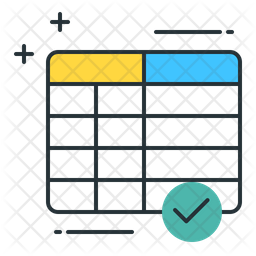

Google Summer of Code 2021
This blog will document the work done for the Statistical description of fluids in pipe flow project for the Machine Learning for Science (ML4SCI) Organization
Welcome to my blog! checkout the sections and links on the left pane to know more.
Introductory Blog
Welcome, everyone!
This is the first blog of the dedicated GSoC blog series. This will be used for documenting and exhibiting the work done during GSoC by me. A short and crisp read
Read more →

Preliminaries
Welcome, everyone!
The Coding Phase began after the 3-week long Community Bonding period.
Read more →
Working with Real Data !
Welcome, everyone!
Having completed the elementary work on the dummy data in the previous few weeks, I was now ready for the working on the actual data !
Read more →